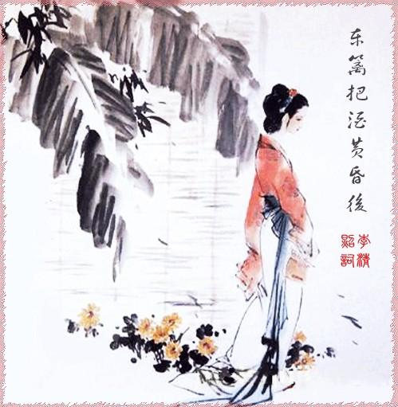

李清照作为中国古代文学史上少有的女作家，其作品中所体现的爱国思想，具有积极的社会意义。 历史的角度李清照的爱国思想，代表了中国古代广大妇女追求男女平等、关心国事、热爱祖国的一个侧面，让后人从中看到了中国古代女性情感世界的另一面。而且，她还在众多爱国作家中为女性争得了一席之地。不仅如此，李清照还开创了女作家爱国主义创作的先河，为后世留下了一个女性爱国的光辉典范，特别是现代女性文学的创作产生了重大影响。 现实的角度认识李清照的爱国思想，能感受到女性在国家统一、民族团结以及社会进步等方面的巨大作用。这对于在弘扬爱国主义，高举爱国大旗，促进民族团结、国家统一和振兴中华时充分发挥妇女的社会作用，具有十分重大的意义。

1.宋·王灼云："易安居士，京东路提刑李格非文叔之女，建康守赵明诚德甫之妻。自少年便有诗名，才力华赡，逼近前辈。在士大夫中已不多得。若本朝妇人，当推文采第一。赵死，再嫁某氏，讼而离之。晚节游荡无归。作长短句能曲折人意，轻巧尖新、姿态百出，闾巷荒淫之语，肆意落笔，自古缙绅之家能文妇女，未见如此无顾藉也。……其风致闺房妇女，夸张笔墨，无所羞畏，殆不可使李戡见也。"（《碧鸡漫志》卷二）
2.宋·胡仔云："近时妇人，能文词如李易安，颇多佳句。小词云：'昨夜雨疏风骤，浓睡不消残酒。试问卷帘人，却道海棠依旧。知否，知否？应是绿肥红瘦。'绿肥红瘦，此言甚新。"（《苕溪渔隐丛话》前集卷六十）
3.明·杨慎云："宋人中填词，易安亦称冠绝，使在衣冠，当与秦七（秦观）、黄九（黄庭坚）争雄，不独争雄于闺阁也。"（《词品》卷二）
4.清·沈谦云："男中李后主，女中李易安，极是当行本色。前此太白，故称词家三李。"（《填词杂说》）
5.清·陈景云评价《金石录后序》云："其文淋漓曲折，笔墨不减乃翁。'中郎有女堪传业'，文叔之谓耶。"（《绛云楼书目》卷四）
6.清·李调元云："易安在宋诸媛中，自卓然一家，不在秦七、黄九之下。词无一首不工，其炼处可夺梦窗之席，其丽处直参片玉之班。盖不徒俯视巾帼，直欲压倒须眉。"（《雨村词话》卷三）
7.清·永瑢等云："清照以一妇人，而词格乃抗轶周柳。…虽篇帙无多，固不能不宝而存之，为词家一大宗矣。"（《四库全书总目提要》）
8.清·陈廷焯云："李易安词，独辟门径，居然可观，其源自从淮海、大晟来，而铸语则多生造。妇人有此，可谓奇矣。"（《白雨斋词话》卷二）
9.陈廷焯又云："易安佳句，如《一剪梅》起七字云："红藕香残玉簟秋"，精秀特绝，真不食人间烟火者。"（同上）
10.现代作家、文学史家郑振铎指出：李清照是"宋代最伟大的一位女词人，也是中国文学史上最伟大的一位女词人。"（《中国文学史》）
11.现代诗人臧克家形容她："大河百代，众浪齐奔，淘尽万个英雄汉；词苑千载，群芳竞秀，盛开一枝女儿花。"（济南李清照纪念堂楹联）